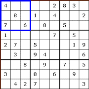
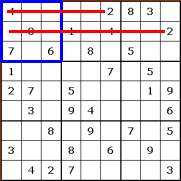

We are a group of highly skilled programmers who have a passion for sudoku. Just kidding, this is a school
assignment.
Our team consists of 4 members, Ruben our Back-end developer, Brent the graphic designer and two Front-end
developers Wolker and Thomas. This doesn't mean that we only did our job, everybody helped on all ends.
We hope you enyoy or website!!
Sincerely The Black Sheep
HELP
How to solve a sudoku:
Rules
A normal sudoku is a 9 by 9 square. The objective of the puzzle is to put the numbers 1 trough 9 in every
row, column and 3 by 3 square block. These numbers can't be repeated.
The same rules apply to smaller or larger sudokus, but the amount of numbers to fill in is the same number
as the length of each row or column.
How to start

A good way to start is looking at a 3 by 3 block and eliminating possibilities. if you look at the
blue box, you can see that the numbers 1,2,3,5 and 9 are yet to be filled in.

If we take the number 2 for example, we can rule out the top and middle row because there is already
a number 2 in those rows. So we know that the number 2 has to be inserted in the bottom row.
The same method can be used for rows and columns. Find out which numbers are not filled in yet and look in
the same rows, columns and 3 by 3 blocks if you can eliminate some numbers.
If you are stuck you can always use the note function. That way you can fill in all possible numbers
temporarily until you are sure it is the right number.